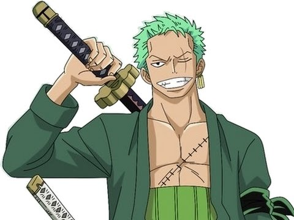
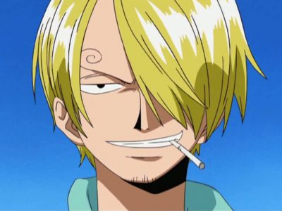
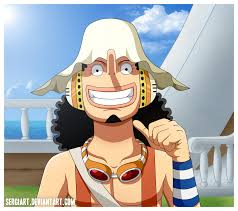

MY BLOG
Welcome to the blog of One Piece
ONE PIECE
Đăng ngày: 4 - Tháng 4 - 2018
Monkey D. Luffy, 1 cậu bé rất thích hải tặc có ước mơ tìm được kho báu One Piece và trở thành Vua hải tặc – Pirate King. Lúc nhỏ, Luffy tình cờ ăn phải trái quỉ (Devil Fruit) Gomu Gomu, nó làm cho cơ thể cậu khả năng co dãn đàn hồi như cao su nhưng đổi lại cậu sẽ không bao giờ biết bơi. Sau đó Luffy lại được Shanks cứu thoát và bị mất 1 cánh tay. Sau đó Shank chia tay Luffy và để lại cho cậu cái mũ rơm (Straw Hat), Shanks nói với Luffy: “Sau này bao giờ thành cướp biển hãy gặp ta và trả lại nó”. Chính lời nói này đã thúc đầy Luffy trở thành 1 cướp biển thật sự. Cho đến một ngày nọ, cậu quyết định rời khỏi ngôi làng nhỏ thân thương đầy kỉ niệm để bắt đầu một chuyến hành trình đi tìm One Piece, kho báu trong truyền thuyết của Hải tặc Vương Gol D. Roger. Và để có thể đạt được mơ ước này, cậu phải tìm cách đến được tận cùng của vùng biển nguy hiểm và chết chóc nhất thế giới: Đại Hải Trình (Grand Line). Trên chuyến đi, Luffy dần thu nạp được nhiều thành viên vào nhóm mình, với thành viên đầu tiên là kiếm sĩ – thợ săn hải tặc – Roronoa Zoro, hoa tiêu – miêu tặc – Nami, xạ thủ – Sogeking – Usopp, đầu bếp – Sanji, bác sĩ – Tony Tony Chopper, khảo cổ học – Nico Robin, thợ đóng tàu – người máy – Franky và nhạc sĩ – bộ xương – Brook. Việc “chiêu mộ” thành viên vào nhóm của cậu cũng được xếp vào dạng có 1-0-2; cậu thường không quan tâm lắm đến “nghiệp vụ” hay sức mạnh của họ, tất cả đều dựa vào trực giác và sở thích cá nhân của riêng cậu. Mặc dù đa phần cậu đều bị từ chối ngay lập tức, đến khi thấy được ý chí và hiểu phần nào con người cậu, họ đều đồng ý trở thành một phần của nhóm. Cùng nhau, họ rong đuổi khắp biển cả bao la, mang trong mình mỗi người là một hoài bão, một ước mơ, một lời thề. Mối quan hệ giữa các thành viên nhóm Mũ rơm cũng rất đặc biệt. Nó không dựa trên vai vế thuyền trưởng-thuyền viên như thông thường; họ gắn kết với nhau bằng hai chữ “đồng đội”, kết nối với nhau từ sâu thẳm trái tim bằng sợi dây mang tên “tình bạn”. Tình bạn đó bền chặt đến nỗi không ai, không thứ gì có thể chia cắt được; thậm chí những hiểu lầm, những bí mật được chôn chặt trong lòng cũng chỉ thắt chặt thêm tình bạn giữa các thành viên với nhau. Từng người đều hiễu rõ năng lực, điểm mạnh điểm yếu của chính mình. Họ đều cố gắng hoàn thành tốt phần mình, đồng thời hỗ trợ người khác trong khả năng có thể. Chính nhờ vậy, nhóm Mũ rơm trở thành một nhóm hải tặc rất mạnh và gần như luôn vượt qua mọi thử thách nhiều người từng tiên đoán là “không thể”.
Những câu nói hay của Luffy
Đăng ngày: 4 - Tháng 4 - 2018
-
"Nếu tôi thành công, tốt thôi. Nếu tôi chết, cũng chẳng sao cả.”
-
"Sức mạnh không được đo bằng kích cỡ của cú đấm đâu, nó được đo bằng kích cỡ của trái tim và giấc mơ!"
-
"Chết không phải là cách để đền ơn . Người ta cứu anh không phải vì lý do đó. Được cứu mạng rồi lại nguyện chết, chỉ có những thằng bạc nhược mới làm như thế !"
Monkey D. Luffy
Tuổi: 19
Sinh ngày: 5/5
Tiền truy nã: 500 triệu Beli(tính đến hiện tại)
Sức mạnh: Luffy ăn trái ác quỷ cao su thuộc hệ paramecia, cơ thể biến thành cao su có thể co giản tùy ý, Luffy không sợ súng đạn, chỉ sợ dao kiếm và đá biển
Tính cách: Được ông nội rèn luyện từ nhỏ nên lớn lên mang trong mình một ý chí kiên cường không khuất phục, luôn sát cánh cùng đồng đội, không tỏ ra vẻ uy nghiêm của môt thuyền trưởng hải tặc, luôn vui nhộn và cười rất sảng khoái.
Các nhân vật khác
-

Roronoa Zoro
Thợ săn hải tặc -

Vinsmoke Sanji
Sanji “Chân đen” -

Usopp
Sogeking (Vua bắn tỉa)